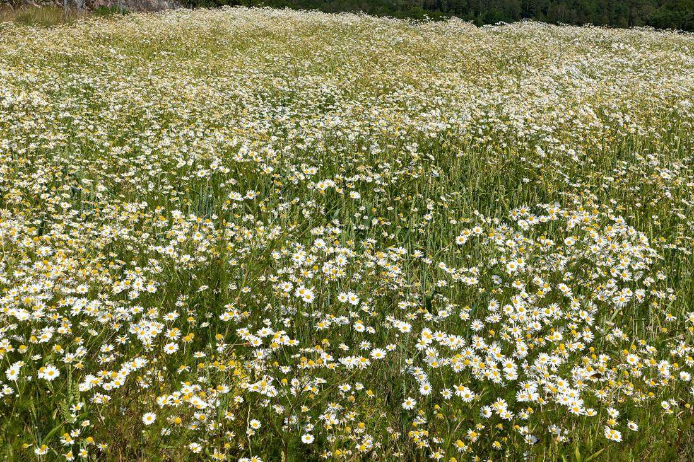
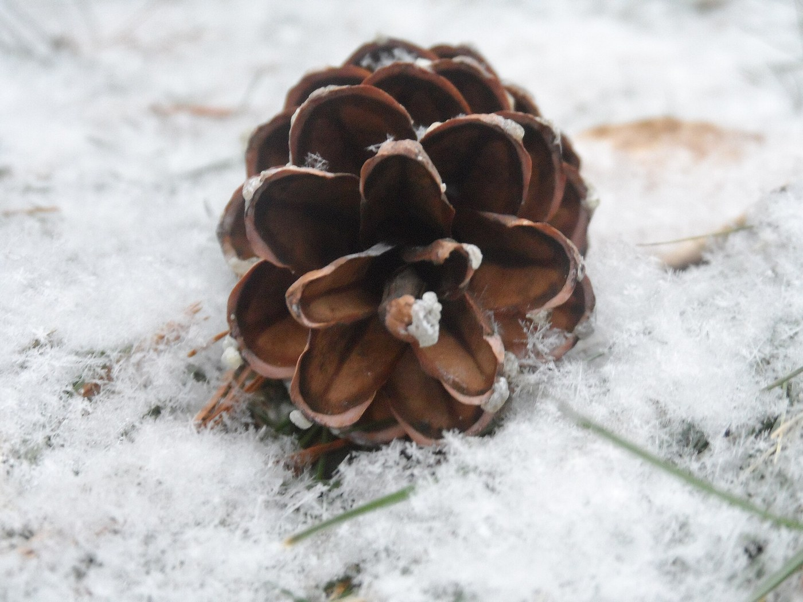

ABOUT
お店のこと
カフェヴァルメは、新潟市東区の国道4号線沿いにあるカフェです。スウェーデンハウスの建物の一部を使い、北欧の家具や照明を配した、日本にいながら北欧の雰囲気を感じられる空間として紹介されています。
- 2021年8月にオープン(ガタチラ掲載情報)
- 木のぬくもりを感じる店内に、暖炉や観葉植物、ダーラナホースの飾りがあるとの紹介があります(新潟さんぽ!)
- 席は4人掛けテーブル、カウンター、窓際の2人掛けなど(同記事)
- 駐車場あり(同記事)
店名「ヴァルメ」の意味や、オーナー様の想いは確認できていません。ここでは断定せず、このサイトの「ぬくもり」というテーマは制作側のイメージです。

MENU
メニュー
掲載情報では、次のようなメニューが紹介されています(提供状況・内容・価格は変わる場合があります。詳細は準備中)。
| 営業時間 | 準備中 |
|---|---|
| 定休日 | 準備中 |
| 価格 | 準備中 |
下の写真は、パンやコーヒー豆のフリー素材イメージです。お店で提供しているものではありません。


VOICE
口コミ(イメージ例)
以下は制作側が作った例文です。実在のお客様の声ではありません。
イメージ例木のぬくもりのある席で、ゆっくり時間が過ぎました。窓の光がやわらかくて、長居したくなる雰囲気です。
創作の例文です。実在のお客様の声ではありません。
イメージ例北欧の雑貨や家具を眺めながらいただくお茶が楽しみです。落ち着いた空間で、ひとりでも入りやすそうです。
創作の例文です。実在のお客様の声ではありません。
イメージ例デザートとお茶のセットで一息つけました。日替わりのメニューを見るのも楽しみのひとつです。
創作の例文です。実在のお客様の声ではありません。